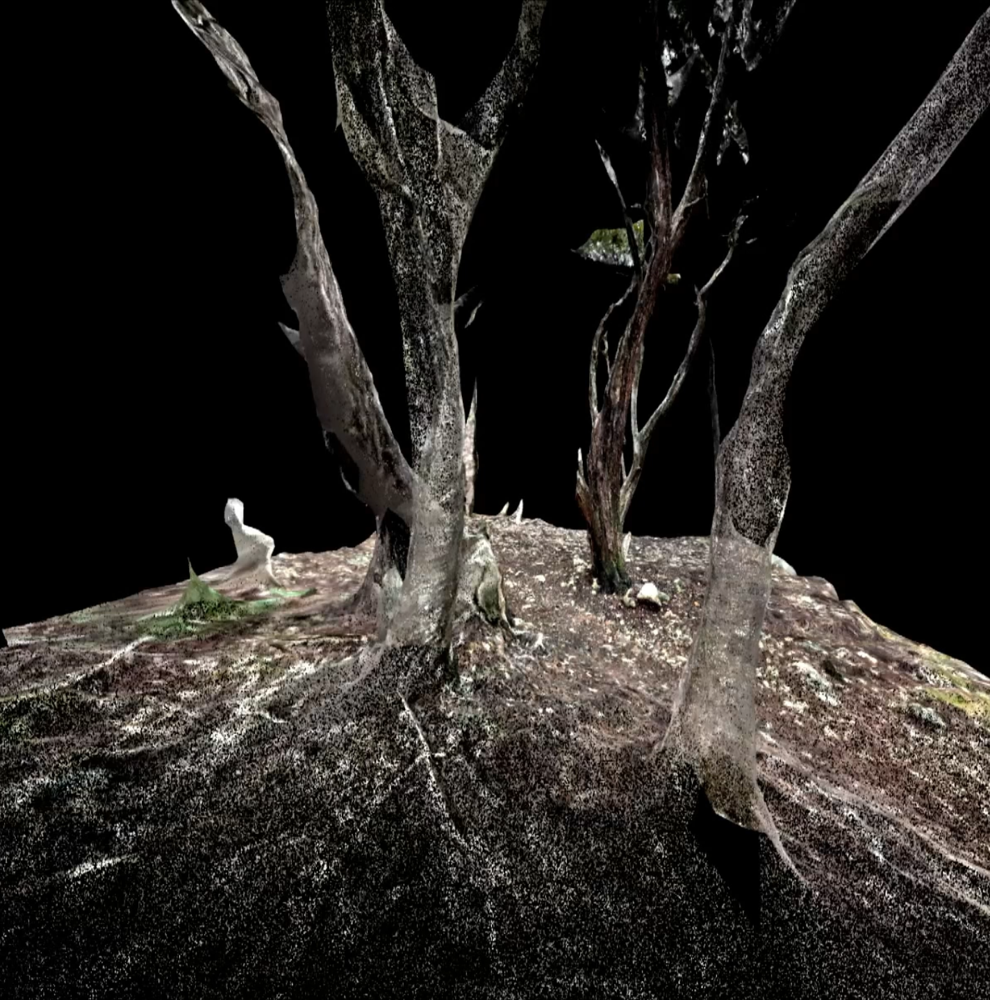
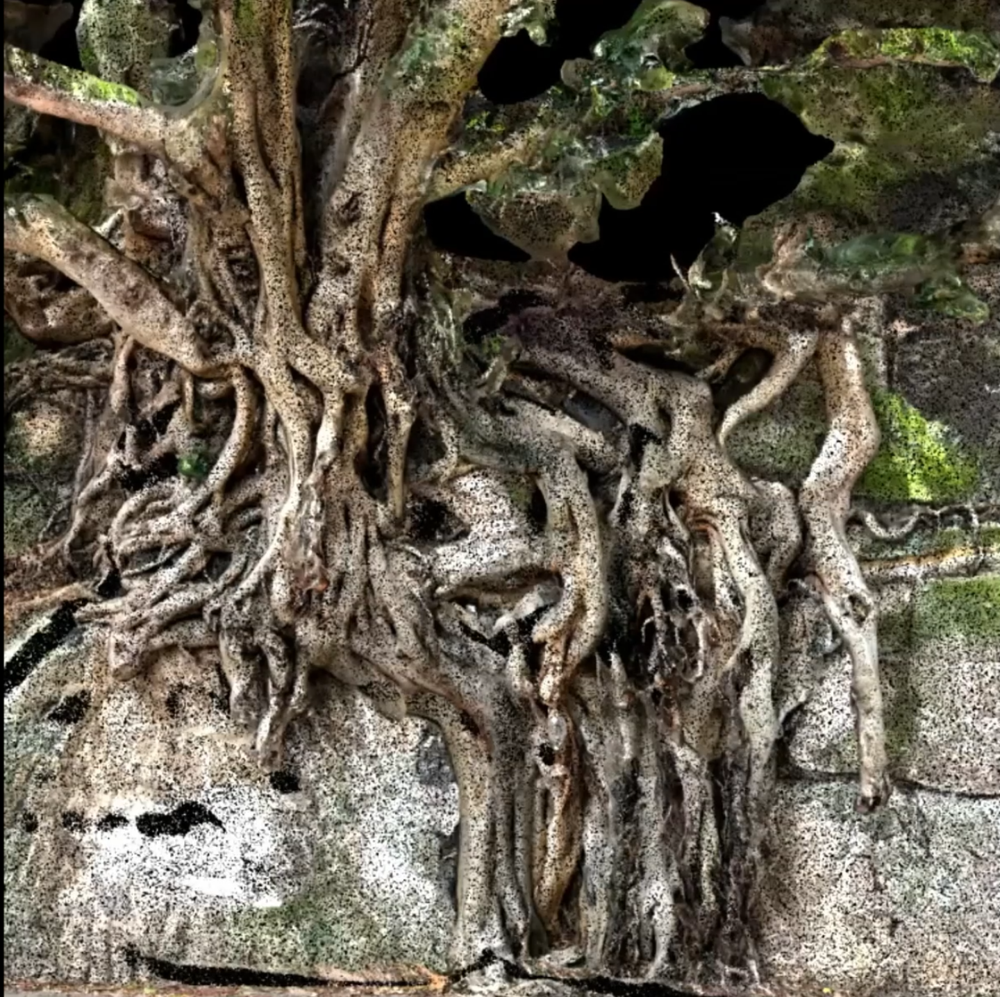
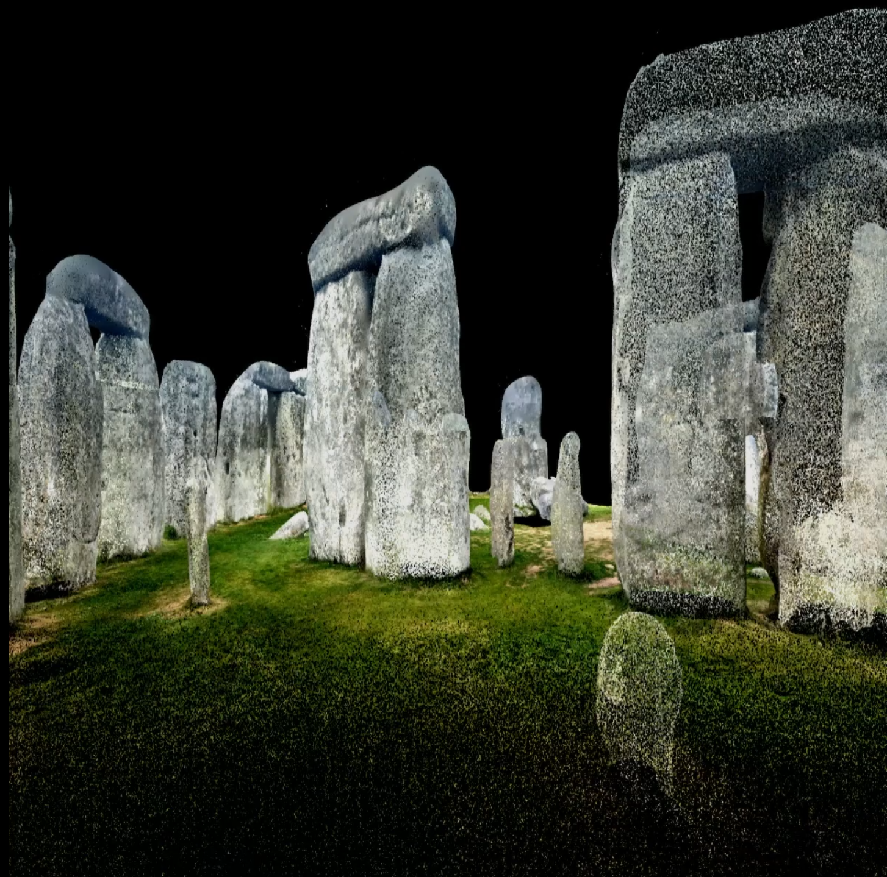

<!DOCTYPE html>
<html lang="en">
<head>
    <meta charset="UTF-8">
    <meta name="viewport" content="width=device-width, initial-scale=1.0">
    <title>off-world</title>
    <link rel="stylesheet" href="style.css">
<link rel="stylesheet" href="https://fonts.googleapis.com/css2?
family=Roboto:wght@300;400;700&
family=Roboto+Mono:wght@300;400;700&
family=Inter:wght@300;400;700&
family=Montserrat:wght@300;400;700&
family=Work+Sans:wght@300;400;700&
family=Playfair+Display:wght@400;700&
family=IBM+Plex+Mono:wght@300;400;700&
family=DM+Mono:wght@300;400;500&
family=JetBrains+Mono:wght@300;400;700&
display=swap">      
  <link rel="icon" type="image/png" sizes="32x32" href="images/favicon32.png">

</head>
<body>


</body>
</html>

    <!-- Header Section -->
    <header class="header">
        <div class="logo">
            <h1><a href="index.html">Isaak Paul-Rivest</a></h1>

        </div>
        <nav class="navigation">
            <ul>
                <li><a href="project.html" class="link">Projets</a></li> <!-- Clickable Text -->                
                <li><a href="contact.html" class="link">Contact</a></li> <!-- Clickable Text -->   
             
            </ul>
        </nav>

    </header>

      <!-- Content Section (Carousel + Text) -->
      <div class="content-container">
        <!-- Carousel Section -->
        <div class="carousel">
            <div class="carousel-images">
                
                
                

                <!-- Add more images as needed -->
            </div>
            <button class="prev">&#10094;</button>
            <button class="next">&#10095;</button>
        </div>

   
        <div class="text-section">
            <h1>off-world</h1>
                <br>
                <br>
            <p> "off-world" est une réalisation de mapping conçue pour le festival MINUTE_MAPP 2025.  </p>
            <br>
            <p>Il m’est à la fois important et personnel d’explorer les environnements vivants et non vivants, en cherchant à créer un équilibre visuel réfléchi entre l’organique et la matière.</p>
             <br>
             <p>Mon objectif est de créer une expérience visuelle qui invite à regarder autrement et à redécouvrir ce qui nous entoure <p>
                <br>
                
                <a href="https://youtu.be/APKLYmozGpg?si=OLJ4EDzPvoqljIv1" style="font-size: 16px; text-decoration: underline; color: inherit;">▶ Watch off-world on YouTube</a>

                <br>
                <br>

        </div>
    </div>
    <script src="script.js"></script>  <!-- Ensure this path is correct -->
</body>
</html>
